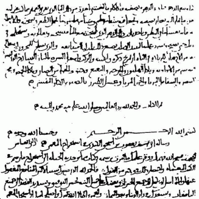

I should be able to whisper something in your ear, even if your ear is 1000 miles away, and the government disagrees with that.
Phillip Zimmermann, creator of Pretty Good Privacy (PGP), the most widely used email encryption software in the world
alfabeto: abcdefghijklmnopqrstuvxz chave: nopqrstuvwxyzabcdefghikm
% echo "mensagem super secreta" | rot13 zrafntrz fhcre frpergn
A análise de frequência foi desenvolvida no século 9, por al-Kindi (crux; 801-873), durante a era de ouro do Islã.
Primeira página do manuscrito de Al-Kindi, "Decifrando Mensagens Criptográficas"
email: paulogeyer@gmail.com
http://paulogeyer.com
/
#